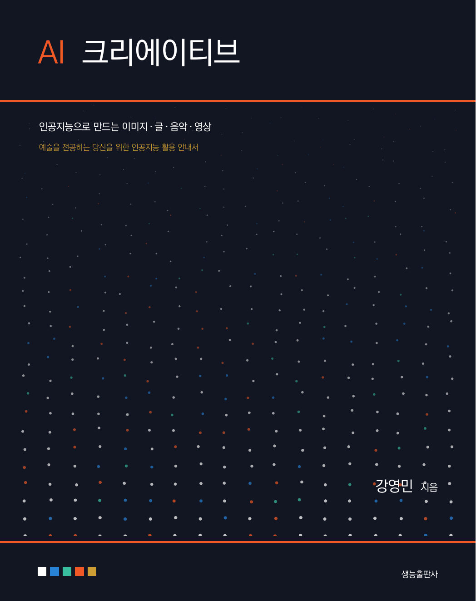

머릿말
이 책 『AI 크리에이티브』는 인공지능을 만드는 사람이 아니라 쓰는 사람을 위해 준비하였습니다. 특히 그림을 그리고, 글을 쓰고, 음악을 만들고, 영상을 찍는 일을 업으로 삼으려는 분들, 그리고 인공지능이라는 말 앞에서 막연한 기대와 불안을 동시에 느껴 온 분들을 독자로 생각하며 썼습니다.
지난 몇 년 사이 창작의 도구는 완전히 달라졌습니다. 문장 몇 줄로 그림이 만들어지고, 흥얼거린 멜로디가 완성된 편곡으로 돌아오며, 정지된 그림 한 장이 움직이는 영상이 됩니다. 이 변화 앞에서 사람들은 대체로 두 갈래로 갈립니다. 한쪽은 어차피 도구일 뿐이라며 외면하고, 다른 한쪽은 이제 창작자는 필요 없어진다며 낙담합니다. 이 책은 두 태도 모두와 거리를 둡니다. 새 도구는 분명 강력하지만, 무엇을 만들지 정하고 결과가 좋은지 판단하는 일은 여전히 사람의 몫이기 때문입니다. 그리고 그 판단을 잘하려면 도구의 작동 방식을 어느 정도는 알아야 합니다.
그래서 이 책은 두 가지를 함께 다룹니다. 첫째는 이해입니다. 인공지능이 어떻게 배우고 어떻게 만들어 내는지를, 수식과 코드 없이 그러나 얼버무리지 않고 설명합니다. 둘째는 활용입니다. 실제로 쓸 수 있는 도구를 익히고, 프롬프트를 다듬고, 결과를 고치고, 완성된 작품을 세상에 내놓는 데까지 갑니다. 이 책에는 파이썬 코드도, 신경망을 학습시키는 실습도 나오지 않습니다. 대신 프롬프트가 그 자리를 대신합니다.
실습에 쓰는 도구는 무료로 쓸 수 있는 것을 우선하여 골랐습니다. 수업에서 다루는 모든 과제는 돈을 내지 않고도 끝까지 완성할 수 있습니다. 다만 무료 도구만으로는 닿기 어려운 지점이 분명히 있고, 그 지점이 어디인지, 돈을 낸다면 무엇이 어떻게 좋아지는지도 정직하게 밝혀 두었습니다. 취미를 넘어 일로 삼으려는 분에게는 이 판단이 필요할 것입니다.
이 책의 웹 에디션(https://dknife.github.io/AIContents/)에서는 본문의 모든 프롬프트를 한 번의 클릭으로 복사해 도구에 바로 넣어 볼 수 있습니다. 인공지능 활용은 읽어서 늘지 않고 해 봐야 늡니다. 책을 펼친 채 도구 창을 함께 열어 두고, 프롬프트를 바꿔 가며 결과가 어떻게 달라지는지 확인하시기 바랍니다.
한 가지 미리 말씀드릴 것이 있습니다. 이 책에 나오는 서비스의 이름과 요금, 기능은 책이 인쇄된 뒤에도 계속 바뀝니다. 이것은 이 분야를 다루는 책의 피할 수 없는 숙명입니다. 그래서 이 책은 특정 서비스의 버튼 위치를 외우게 하는 대신, 어떤 도구를 만나든 통하는 원리와 판단 기준을 익히도록 썼습니다. 도구는 바뀌어도 좋은 프롬프트를 쓰는 법, 결과를 비평하는 눈, 저작권을 지키는 태도는 바뀌지 않습니다.
끝으로, 이 책이 나오기까지 도움을 주신 모든 분께 깊이 감사드립니다.
2026 여름, 부산에서 강영민
이 책의 구성
전체 구성
이 책은 13개의 장과 3개의 부록으로 이루어져 있으며, 큰 흐름은 다음과 같습니다.
- I부. AI 이해하기 (1–5장) 인공지능이 창작의 도구가 된 배경, 기계가 배우는 방식, 생성형 AI가 이미지와 문장을 만들어 내는 원리를 익히고, 이를 바탕으로 프롬프트를 설계하는 법과 창작자가 반드시 알아야 할 윤리·저작권 문제를 다룹니다.
- II부. 창작 실무 (6–12장) 이미지 생성과 제어, 글쓰기와 스토리텔링, 웹툰형 콘텐츠, 음악과 사운드, 영상, 그리고 여러 도구를 엮는 에이전트와 워크플로 자동화까지 매체별 실무를 다룹니다.
- III부. 프로젝트 (13장) 자기 주제를 정해 기획부터 제작·발표·포트폴리오 공개까지 한 편의 작업을 끝내는 과정을 안내합니다.
- 부록 도구 총정리(A), 프롬프트 사전(B), 저작권 체크리스트(C)를 실어 작업 중에 찾아볼 수 있게 하였습니다.
각 장의 구성
모든 장은 다음과 같은 일관된 흐름으로 구성되어 있습니다.
- 챕터 도입부 장식 숫자와 함께, 그 장을 마치면 할 수 있게 될 일을 정리한 이 장을 마치면 박스로 시작합니다.
- 본문 개념 설명과 프롬프트 예제, 그리고 실제 결과를 통해 단계적으로 학습합니다. 새 도구는 도구 카드로 소개하며 무료·부분 무료·유료 배지를 함께 표시합니다.
- 이 장의 실습 직접 손을 움직여 결과물을 만드는 과제를 모아 제시합니다. 수업의 주차별 과제와 대응됩니다.
- 요약 그 장의 핵심을 항목별로 정리하여 복습에 활용할 수 있습니다.
- 연습문제 개념을 점검하는 문제와, 만든 결과물을 스스로 비평해 보는 문제를 함께 제공합니다.
웹 에디션과 프롬프트 실습
이 책의 웹 에디션은 https://dknife.github.io/AIContents/ 에서 서비스됩니다. 본문의 각 프롬프트에는 [복사] 버튼과 [도구에서 열기] 버튼이 붙어 있어, 프롬프트를 그대로 복사해 해당 도구 화면으로 바로 이동할 수 있습니다. 2–3장의 원리 설명에는 브라우저에서 직접 조작해 보는 체험 위젯이, 부록 A에는 요금·한도로 정렬하고 걸러 볼 수 있는 도구 비교표가 실려 있습니다.
15주 학습 계획
이 책은 주 2시간, 한 학기(15주) 교양 강의에 맞추어 설계하였습니다. 8주차와 15주차는 프로젝트 발표에 배정하고, 웹툰형 콘텐츠 프로젝트(9장)와 영상(11장)에는 각각 2주를 두었습니다.
| 주 | 학습 내용 | 과제·활동 |
|---|---|---|
| 1 | 1장 AI와 디지털 아츠의 세계 | 도구 계정 만들기, 첫 생성 |
| 2 | 2장 기계는 어떻게 배우는가 | 체험 위젯으로 원리 확인 |
| 3 | 3장 생성형 AI는 어떻게 창작하는가 | 모델별 결과 비교 |
| 4 | 4장 프롬프트 엔지니어링 | 프롬프트 개선 일지 |
| 5 | 5장 AI 윤리와 저작권 | 쟁점 토론 |
| 6 | 6장 AI 이미지 생성 | 콘셉트 이미지 10장 |
| 7 | 7장 이미지 제어와 편집 | 캐릭터 일관성 확보 |
| 8 | 중간 발표 | 웹툰형 콘텐츠 기획안 |
| 9 | 8장 AI 글쓰기와 스토리텔링 | 시나리오·시 창작과 상호 평가 |
| 10 | 9장 웹툰형 콘텐츠 프로젝트 | 개인 프로젝트 제작 |
| 11 | 10장 AI 음악과 사운드 | 배경음악 만들기 |
| 12 | 11장 AI 영상 만들기 | 짧은 영상 제작 |
| 13 | 12장 AI 에이전트와 워크플로 자동화 | 나만의 창작 도우미 만들기 |
| 14 | 13장 기획·제작·발표·포트폴리오 | 기말 프로젝트 작업 |
| 15 | 기말 발표 | 작품 발표와 포트폴리오 공개 |
강의 진도는 담당 교수의 계획에 따라 달라질 수 있습니다. 중요한 것은 매주 반드시 한 번은 직접 만들어 보는 것입니다. 이 분야는 읽고 이해한 양이 아니라 만들어 본 양에 비례해 실력이 늡니다.